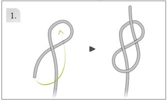
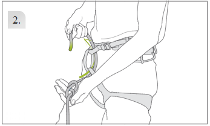
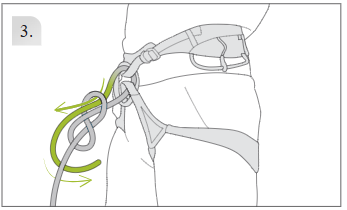
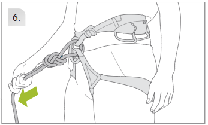
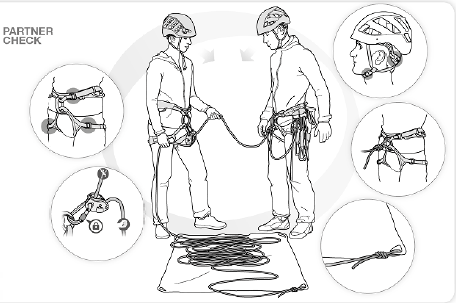
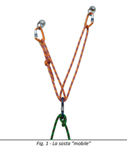
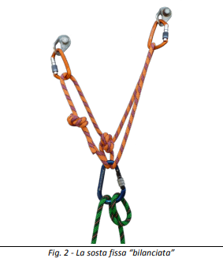
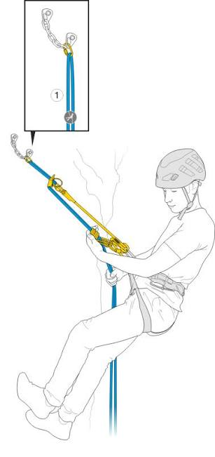

Agli allievi del corso di arrampicata
Condivido con voi questa guida alle falesie che abbiamo visitato durante questi due anni di corso,
che vuole essere anche una testimonianza del percorso che abbiamo fatto insieme.
Buona arrampicata!
Consigli Didattici e regole di educazione, rispetto e sicurezza.
- Partner Check: Verifica reciproca tra compagni, nodo a otto fatto correttamente, corda inserita correttamente nel dispositivo di assicurazione.
- Nodo a fine corda: Fare sempre il nodo a fine corda possibilmente all'asola della sacca porta corda.
- Casco: Indossare il casco anche se gli altri non lo fanno, prestare particolare attenzione quando si sta alla base della parete.
- Verifica Ancoraggi: Controllare lo stato di usura del moschettone di sosta, utilizzare se necessario un proprio moschettone se si prevede di ripetere più volte la via.
- Ordine: Manteniamo le nostre cose in ordine e rispettiamo lo spazio degli altri.
- Parcheggio: Parcheggiamo con ordine, rispettando le proprietà private e lasciamo spazio agli altri.
- Rispetto dei Luoghi: Portiamo a casa i rifiuti ed espletiamo i bisogni fisiologici al bar.
- Evitate rumori inutili: Ridiamo e scherziamo, ma senza urla che possano disturbare la fauna e chi sta scalando.
- Uso del bacino: Antiversione e Retroversione del bacino o "mossa del pincio". Esco fuori col bacino per vedere i piedi, torno dentro con il bacino quando termino il movimento e raggiungo una posizione di equilibrio.
- Progressione: Separa il movimento delle mani da quello dei piedi.
- Uso dei piedi: Passi corti, senti l'esigenza del passo iniziale centrale, parti da una posizione di equilibrio e arriva ad un'altra posizione di equilibrio. Non smettere di muovere i piedi finché non la trovi. Non staccare gli occhi dai piedi finché non finisci il movimento.
- Lettura della via: Analizza la linea di salita prima di iniziare, fatti un'idea della difficoltà e dei punti critici.
Nodi e Manovre di Corda Utili
Il nodo fondamentale per legarsi all'imbracatura in arrampicata e alpinismo. Va effettuato vicino all'imbragatura, ha un'ottima capacità di tenuta e un immediato controllo visivo della corretta esecuzione.

1. Nodo a otto iniziale
2. Inserimento negli anelli dell'imbrago
3. Ripasso
4. Nodo a otto ripassatoI dispositivi di assicurazione sono necessari per fare sicura al compagno di cordata, si dividono in:
- Dinamici (es. reverso o secchiello): dissipano l'energia della caduta tramite lo sfregamento della corda intorno al moschettone e richiedono l'azione frenante costante della mano dell'assicuratore.
- A frenaggio assistito (es. Grigri): aiutano ad arrestare la corda in caso di caduta grazie a un meccanismo interno (a camma o basculante) che blocca lo scorrimento.

Controllo incrociatoLa sosta è il punto attrezzato o da attrezzare lungo una via dove la cordata si ferma, può essere composta da:
- ancoraggi naturali (alberi, spuntoni di roccia, clessidre)
- ancoraggi artificiali (spit, chiodi, fix, friend, nut)
i punti devono essere collegati tra loro con anelli di cordino, fettucce o catene per garantire solidità e ridondanza.
Tipologie e caratteristiche:
-
Sosta mobileVantaggi (Pro)
Suddivide il carico in modo più o meno uguale su tutti i punti di ancoraggio.
Ripartisce il carico indipendentemente dalla direzione in cui avviene il volo.
Facilità e velocità nella costuzione.
Svantaggi (Contro)Se uno dei rami del cordino si rompe, l’intera sosta è compromessa.
In caso di fuoriuscita di un ancoraggio, l’allungamento del cordino provoca una forte sollecitazione a strappo sugli ancoraggi rimanenti.
-
Sosta fissaVantaggi (Pro)
In caso di rottura di un ramo del cordino, la tenuta della sosta è mantenuta.
Se un ancoraggio cede, il restante ancoraggio non subisce un forte impatto.
Svantaggi (Contro)Non è multiridezionale.

1.Sosta mobile
2. Sosta fissaLa corda doppia è una manovra fondamentale di discesa in alpinismo e arrampicata, utilizzata quando non è possibile o sicuro scendere a piedi o disarrampicando.
Materiale necessario:
- Discensore a secchiello o piastrina
- Cordino in kevlar per nodo autobloccante
- Longe (cordino in kevlar lungo o fettuccia cucita)
- Tre/quattro moschettoni

Schema generale della discesa in corda doppiaSchede Falesie visitate durante il corso.
Indicazioni generali sul tipo di roccia, l'esposizione, il periodo consigliato e i link GPS diretti per raggiungere le falesie dove siamo stati con il corso.
Nessuna falesia trovata
Prova a modificare i criteri di ricerca o resetta i filtri.